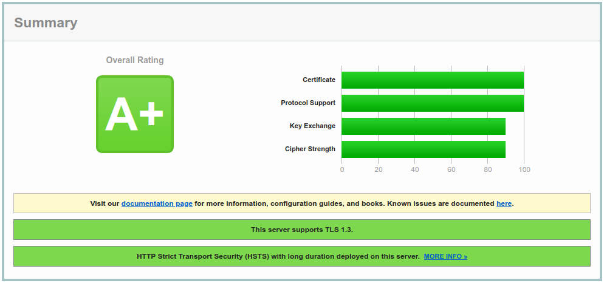

In this update, the recommended baseline is the Mozilla SSL Configuration Generator Intermediate profile. It is the right default for public websites that need a good balance between modern security and real-world client compatibility. If you only support very recent clients, the Mozilla Modern profile is stricter, but it is no longer the safest default for a general-purpose web server.
The goal is still a clean result on Qualys SSL Labs, but the scanner grade should not be the only target: keep renewals automated, monitor compatibility, and re-test after Nginx, OpenSSL, certificate, or CDN changes.

1. Basic Security
Minimizing the amount of data revealed to potential attackers is still useful. The open source version of Nginx can hide the exact version number, although the Server header will still identify Nginx.
# Only return Nginx in server header server_tokens off;For broad compatibility in 2026, allow TLS 1.2 and TLS 1.3 only. Newer Nginx builds already default to these protocols, but keeping the directive explicit makes the intended policy clear.
- TLS 1.3 — faster handshakes, simpler cipher negotiation, and no legacy key exchange modes.
- TLS 1.2 — still needed for older but common clients when restricted to ECDHE and AEAD cipher suites.
- No TLS 1.0/1.1 — these legacy protocols should remain disabled for internet-facing services.
If Nginx rejects TLSv1.3, check the Nginx and OpenSSL versions first. TLS 1.3 requires Nginx and an OpenSSL build that support it.
2. Cipher Suite
For TLS 1.2, keep the cipher list short: ECDHE for forward secrecy, AES-GCM or ChaCha20-Poly1305 for authenticated encryption, and ECDSA/RSA depending on your certificate. The current Mozilla Intermediate profile no longer needs finite-field DHE suites for a normal Nginx website, so remove the older DHE and CCM entries from the 2024 Gist.
# Mozilla SSL Configuration Generator 6.0, Intermediate, Nginx # TLS 1.2 cipher suites ssl_ciphers ECDHE-ECDSA-AES128-GCM-SHA256:ECDHE-RSA-AES128-GCM-SHA256:ECDHE-ECDSA-AES256-GCM-SHA384:ECDHE-RSA-AES256-GCM-SHA384:ECDHE-ECDSA-CHACHA20-POLY1305:ECDHE-RSA-CHACHA20-POLY1305;The ssl_ciphers directive does not configure TLS 1.3 ciphersuites. On Nginx 1.19.4+ you can set OpenSSL TLS 1.3 ciphersuites with ssl_conf_command, but leaving OpenSSL defaults is also common. If you set them explicitly, test with nginx -t first.
# Optional on Nginx 1.19.4+ with a compatible OpenSSL build ssl_conf_command Ciphersuites TLS_AES_128_GCM_SHA256:TLS_AES_256_GCM_SHA384:TLS_CHACHA20_POLY1305_SHA256;3. Optimization
The ssl_prefer_server_ciphers directive no longer needs to be forced on for this profile. With a short list of strong TLS 1.2 suites, allowing the client preference can improve hardware acceleration and ChaCha20 selection without weakening the policy.
ssl_prefer_server_ciphers off;The ssl_session_tickets directive controls TLS session tickets. A conservative setup can disable tickets and keep shared session caching. On newer Nginx versions with shared cache, automatic ticket key rotation is better than it used to be, but multi-node deployments still need deliberate key management.
ssl_session_tickets off;The ssl_session_timeout and ssl_session_cache directives enable SSL session caching to improve performance by allowing the server to reuse previously established sessions.
# Enable SSL session caching for improved performance ssl_session_timeout 1d; ssl_session_cache shared:SSL:10m;The ssl_buffer_size directive sets the buffer size for sending data over SSL. The default is 16k; smaller values reduce Time To First Byte.
# Default is 16k — smaller value reduces Time To First Byte ssl_buffer_size 8k;The ssl_stapling and ssl_stapling_verify directives enable OCSP stapling. For stapling verification to work reliably, Nginx also needs the issuer chain through ssl_trusted_certificate and a DNS resolver.
# OCSP stapling ssl_stapling on; ssl_stapling_verify on; ssl_trusted_certificate /etc/nginx/ssl/root-ca-and-intermediates.pem; resolver 1.1.1.1 1.0.0.1 valid=300s; resolver_timeout 5s;4. Security Headers
X-Content-Type-Options tells the browser to respect the MIME types in Content-Type headers, avoiding MIME type sniffing.
Content Security Policy (CSP) helps mitigate XSS, clickjacking, and data injection attacks. Do not publish two alternative enforcing CSP headers at once: browsers enforce all CSP headers they receive. Start with a small enforcing policy, then test stricter script-src rules with Content-Security-Policy-Report-Only.
HTTP Strict-Transport-Security (HSTS) tells browsers to access the site over HTTPS in the future. Use a long max-age only after HTTP to HTTPS redirects and all subdomains are under control. The preload directive should be an explicit opt-in, not a default.
# Security headers ## X-Content-Type-Options: avoid MIME type sniffing add_header X-Content-Type-Options "nosniff" always; ## Referrer-Policy: keep full referrers on same-origin requests only add_header Referrer-Policy "strict-origin-when-cross-origin" always; ## Optional: disable browser features that this site does not use add_header Permissions-Policy "camera=(), microphone=(), geolocation=()" always; ## Small enforcing CSP baseline add_header Content-Security-Policy "object-src 'none'; base-uri 'self'; frame-ancestors 'self';" always; ## Test a stricter CSP before enforcing it add_header Content-Security-Policy-Report-Only "default-src 'self'; script-src 'self'; object-src 'none'; base-uri 'self'; frame-ancestors 'self';" always; ## Strict Transport Security (HSTS) add_header Strict-Transport-Security "max-age=63072000; includeSubDomains" always;One Nginx detail to remember: if you define add_header in a lower location block, it can override inherited headers from the server block. Re-test the final responses, not only the top-level config.
5. DH Parameters
With the cipher list above, Nginx should negotiate ECDHE for TLS 1.2 and TLS 1.3 key exchange groups for TLS 1.3. A custom finite-field Diffie-Hellman parameter file is no longer necessary for the default configuration.
Keep ssl_dhparam only if you intentionally re-enable DHE suites for a legacy or compliance requirement. In that case, use at least 2048 bits, test the performance impact, and document why DHE is still needed.
# Optional: only if your enabled cipher suites include DHE $ openssl dhparam -out /etc/ssl/certs/dhparam.pem 2048 $ openssl dh -in /etc/ssl/certs/dhparam.pem -textOnce generated, reference the file in your Nginx config only for that DHE-enabled policy:
ssl_dhparam /etc/ssl/certs/dhparam.pem;Complete configuration
The complete Nginx example is kept in the embedded Gist below. Keep it synchronized with the Mozilla generator and your actual Nginx/OpenSSL versions.
Sources
- Mozilla SSL Configuration Generator and its machine-readable guideline files.
- Nginx ngx_http_ssl_module documentation for protocol, ciphers, session tickets, OCSP stapling, and DH parameter directives.
- HSTS preload submission requirements for HSTS ramp-up and preload opt-in guidance.
- OWASP HTTP Security Response Headers Cheat Sheet for security header recommendations.
Conclusion
Nginx TLS hardening is not a one-time copy-paste task. Use a maintained profile, keep certificates and dependencies current, avoid legacy compatibility unless you have measured demand for it, and test after every meaningful platform change.
Evaluate your configuration: ssllabs.com/ssltest